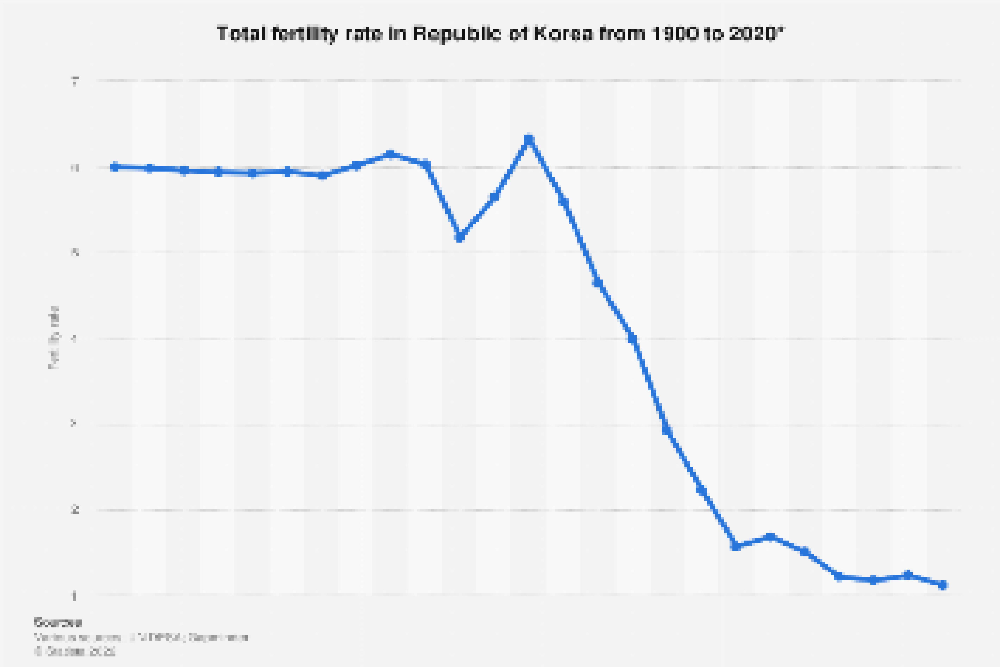

1. More written evidence
Written evidence is Key to preserving a language. Thanks to the preservation of the Hunminjeongeum (훈민정음), we are able to understand the culture and complexity of the primitive versions by King Sejong of written Korean characters no matter how much it has evolved today.
2. Spread the K Culture!
Spreading awareness of Korean culture and our language globally can increase the interest and prevalence of the Korean language. Nowadays, K-pop and K-drama are becoming extremely popular around the world and more people have shown interest in learning the Korean language.
3. Increase Birth Rate
Many young married couples are choosing not to have children due to financial and career-related reasons. By encouraging these couples to have children through various benefits (equal opportunities for mothers, generous maternity/paternity leaves, etc), future generations of Koreans can preserve their language.

4. Pay Attention to Orthogrpahy
Texting language has become widespread among younger generations and children, the proper Korean orthography is slowly getting ignored. Enforcing proper Korean grammar and spelling, and using pure Korean words that aren’t influenced by western countries can help preserve the language.
5. Hangeul Day (한글날)
Hangeul day or Korean Alphabet day (October 9th) is a national Korean commemorative day marking the invention and proclamation of Hangul, the Korean alphabet, by the 15th-century Korean King Sejong the Great.

6. Teach Jejuan in Schools
For Jejuan in particular, only older generations are able to speak the proper dialect. Teaching Jejuan in schools can encourage younger generations to continue learning their native language to keep the unique Jeju culture alive.